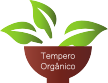

O Tempero Orgânico se destaca entre os melhores restaurantes vegetarianos da cidade, mantendo, ano após ano, a qualidade da sua comida e uma clientela vegetariana fiel.
Seus sócios, apaixonados por sustentabilidade e qualidade de vida, se conheceram por acaso. Um bate papo informal fez nascer a ideia de abrir um restaurante onde a culinária fosse 100% saudável, orgânica, funcional, e claro, com o sabor refinado.
O restaurante recebe diariamente ingredientes orgânicos de produtores locais e prepara seu saboroso e saudável buffet misturando o melhor da culinária brasileira com a indiana e com clássicos de outras cozinhas. O buffet ainda é composto de uma variada e colorida mesa de saladas e grãos germinados.